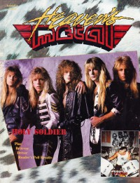
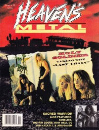

CMnexus
: Contemporary Christian culture, music, and media.
|
Holy SoldierOn the cover
April 1990
Heaven's Metal |

January 1992
Heaven's Metal | Media coverage:- 1986 in Heaven's Metal "Holy Soldier", by Doug Van Pelt
- Jan 1988 in CCM "Heavy Metal Thunder", by David S. Hart
- Mar 1988 in Heaven's Metal "Running Amuck With Holy Soldier", by Harley Dardano
- Mar 1988 in Heaven's Metal "Poster: Holy Soldier"
- Jul 1989 in Adonai Metal Rock "Holy Soldier"
- Dec 1989 in CCM "Toys in the Band: Holy Soldier"
- Mar 1990 in Notebored "Holy Soldier"
- Apr 1990 in CCM "New Faces: Holy Soldier", by Doug Van Pelt
- Apr 1990 in Heaven's Metal "In The Trenches With Holy Soldier", by Doug Van Pelt
- Apr 1990 in Heaven's Metal "Poster: Holy Soldier"
- Jun 1990 in Heaven's Metal "Metal Tracks: Holy Soldier "See No Evil" music video"
- Jun 1990 in Heaven's Metal "Holy Soldier (completed article from issue #24)"
- Sum 1990 in Harvest Rock Syndicate "The Discipline of the Young & The Strong", by Bruce A. Brown
- Dec 1990 in CCM "In Concert: The Back Room, Austin, TX", by Doug Van Pelt
- Dec 1990 in Heaven's Metal "Crying Out For Holy Soldier", by Doug Van Pelt
- Dec 1990 in Heaven's Metal "Concert Review: Austin, TX", by I. B. Willis
- Apr 1991 in Heaven's Metal "Metal Tracks: Holy Soldier (influence on Desert Storm troops)"
- May 1991 in Adonai Metal Roxx "Interview: Holy Soldier"
- Jul 1991 in CCM "Fun in the Son", by David Banta
- Jan 1992 in Heaven's Metal "Taking The Last Train", by Doug Van Pelt
- Feb 1992 in CCM "Getting The Message: Satan", by Steve Rabey
- Mar 1992 in CCM "Getting The Message: Abortion", by Steve Rabey
- Mar 1992 in Notebored "Holy Soldier"
- May 1992 in Syndicate "Running For The Last Train", by Kathleen A Ervin
- Jul 1992 in CCM "Holy Soldier Answers The Skeptics", by Roxanne Smith
- Sep 1992 in Heaven's Metal "Concert Review: Holy Soldier", by Joey Knight
- Jan 1994 in Heaven's Metal "Looking For The Next Train", by David Muttillo
- Dec 1995 in HM "A New + Improved", by Brent Hershey
- Jan 1996 in CCM "Onward Holy Soldiers", by Marykay Selby
- Nov 1996 in HM "Hardnews: Holy Soldier & Pat Boone"
- Jul 1997 in HM "What This Band Will Do For An Encore..."
- Jan 1998 in 7ball "Holy Soldier", by Mike Parker
- Jun 2006 in Heaven's Metal "Holy Soldier", by Chris Beck
- Aug 2009 in Heaven's Metal "Bullets From Brazil: Dear Friends", by Andy Robbins
Albums & reviews:1988: demo #2
2006: Live, Rare, and Raw [DVD]
Award Summary (Nominations / Wins)
Dove Awards1993 Dove Awards- Metal Recorded Song: "Last Train"
1994 Dove Awards- Metal Recorded Song: "Dead End Drive"
1996 Dove AwardsBooks about Holy Soldier
- "Holy Soldier" in The Encyclopedia of Contemporary Christian Music (Mark Allan Powell, 2002).
|
|